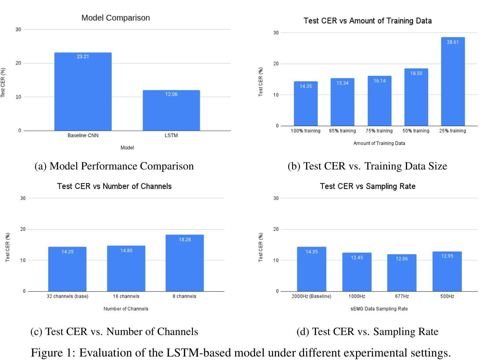
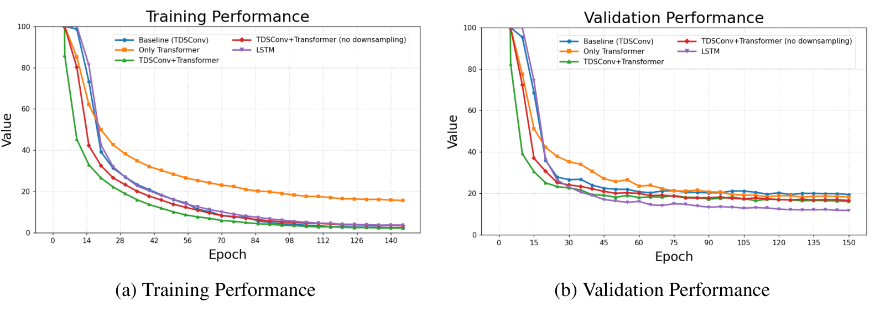

Predicting Keystrokes from Electromyography Signals
Peike Li, Wenxuan Karen Li, Debajyoti Chakrabarti, Qizhao Chen
Overview
Surface electromyography (sEMG) contains muscle-activity signals that can be used to infer typed keystrokes without a physical keyboard. We studied neural sequence models for decoding keystroke sequences from multichannel EMG recordings, focusing on architectures that can capture temporal dependencies in noisy high-dimensional signals.
We compared a CNN baseline with LSTM and Transformer-based models and then studied how performance changes with training-data availability, electrode density, data augmentation, and temporal sampling rate.
Sequence Models for EMG Decoding
LSTM:
- Processes multichannel EMG sequences temporally
- MLP feature projection
- Stacked LSTM layers
- CTC loss for sequence alignment
Transformer:
- Positional encoding
- Self-attention over temporal features
- CTC output
- Also tested a temporal-convolution (TDSConv) + Transformer variant
Model Performance

| Method | Test CER (%) |
|---|---|
| Baseline (CNN) | 23.21 |
| LSTM (RNN) | 12.06 |
| Transformer (no downsampling) | 38.08 |
| Transformer-only | 100.00 |
| TDSConv + Transformer | 30.69 |
Under this dataset and training setup, the LSTM generalized best. This does not imply that Transformer architectures are generally worse for EMG decoding — only that, among the configurations tested here, the LSTM achieved the lowest test CER.
What Affected Decoding Performance?

- Training data: performance degrades significantly as the available training set becomes smaller
- Electrode density: reducing from 32 to 16 channels causes only a modest degradation, while reducing to 8 channels degrades performance more strongly
- Sampling frequency: an intermediate sampling rate performed best in the tested configuration
- Augmentation: moderate augmentation improved generalization, while excessive augmentation degraded performance
Training Behavior

The LSTM showed the strongest validation behavior and the smallest generalization gap among the tested sequence models.
Key Takeaway
Temporal structure mattered more than model complexity: under this dataset and training setup, the LSTM substantially outperformed the CNN baseline and the tested Transformer variants.
- LSTM reduced CER from 23.21% to 12.06%
- CTC enabled sequence-level keystroke decoding
- Performance depended strongly on training-data availability
- Moderate sensor reduction remained viable
- Sampling rate and augmentation had non-trivial effects on generalization